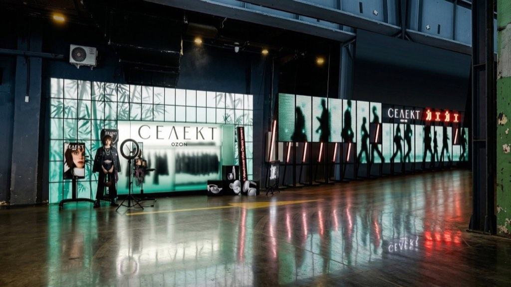
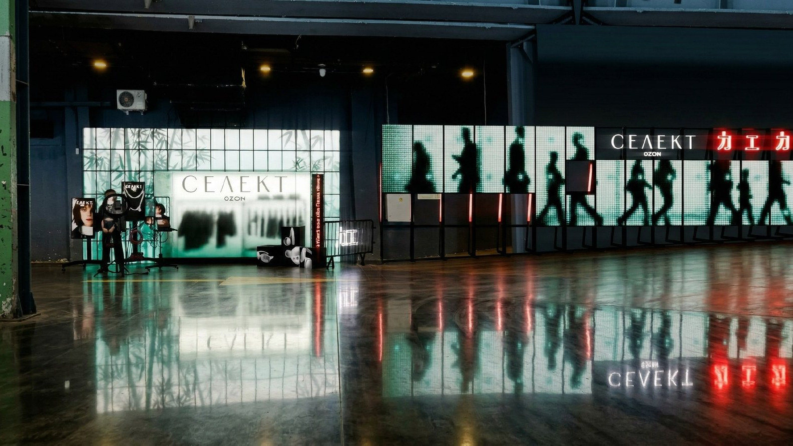

ozon селект
- клиент
- Ozon Селект
- год
- —
- отрасль
- e-commerce · fashion
- формат
- бренд-зона
задача
фестивальная бренд-зона на VK TUSA должна держать внимание весь день — и в дневном потоке, и вечером
идея
продуманная фотозона: недопроявленное оформление, которое хочется разглядывать
как сделали
- 01модульная стена
сквозь полупрозрачные стены — тропические листья и рейлы с одеждой
- 02экраны
движущиеся силуэты: у каждого кадра свой фон
- 03свет по расписанию
дневной режим отличался от вечернего





результат
весь деньлокация приносила бренду контент